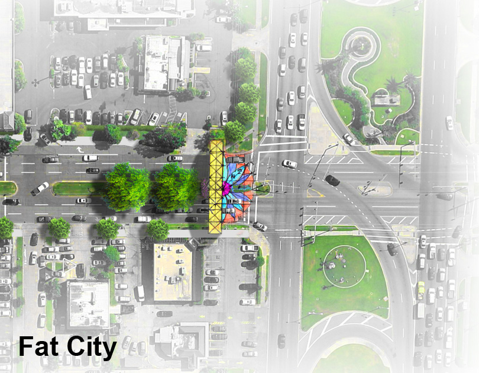

|  |
Severn Avenue Corridor Pedestrian & Bicycle Improvements
In Metarie – one of New Orleans' suburbs – Severn Avenue sits at the heart of Fat City, a place best known for its brief stint in the 1980's where the nightlife once rivaled that of Bourbon Street. Today the area exists as Metarie's downtown, though still maintains a largely suburban character next to Lakeside Mall.
This planning study was commissioned to explore how Severn Avenue might be better utilized as a multi-modal corridor, with better integration of pedestrian and bicycle infrastructure. The strategy that emerged can best be described as: a greening of Severn. Large swaths of asphalt dominate the surrounding landscape. As such, the main strategy was the addition of shrubs and trees as pedestrian cover, along with miniature parks, or 'parklets'. Additionally road pendants and gateways proposed at the ends of Severn Avenue better define the thoroughfare.
Location |
Metarie, LA |
Year |
Designed 2013 |
Type |
Planning Study |
Team |
Perez, APC w/ Cap Caplinger & Meyer Engineers |
Program |
Streetscape improvements |
Overall PlanIn order to define the scope of the study, Severn Avenue was analyzed through a series of right-of-way sections between Veterans Memorial Boulevard and West Esplanade Avenue. A few different typical conditions emerged which guided the improvement strategy. |